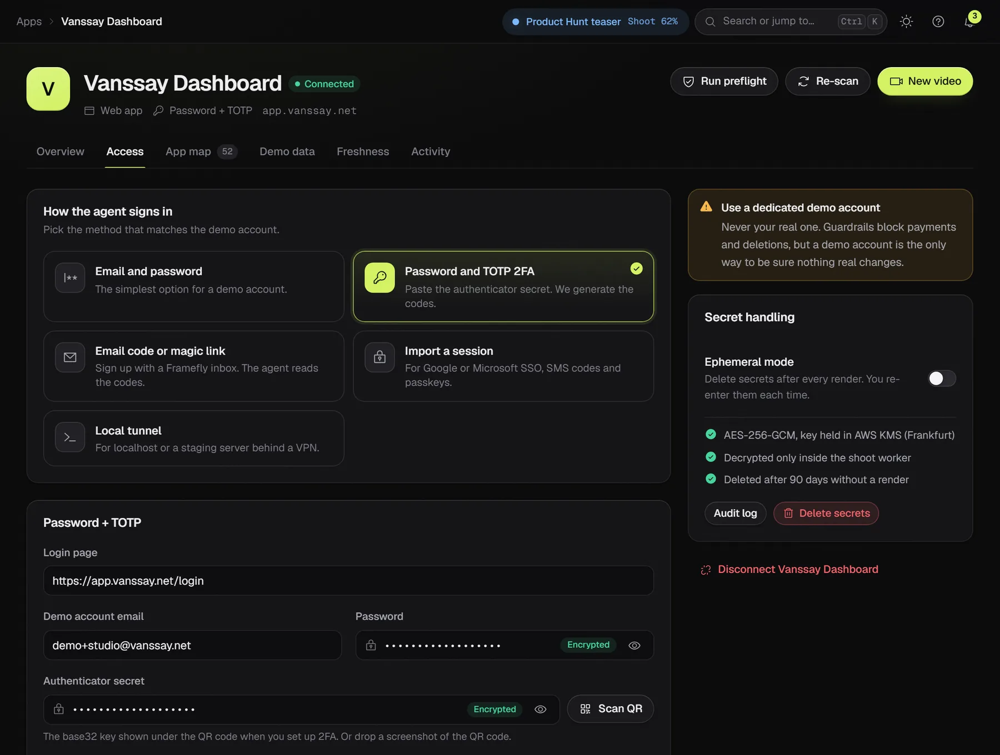
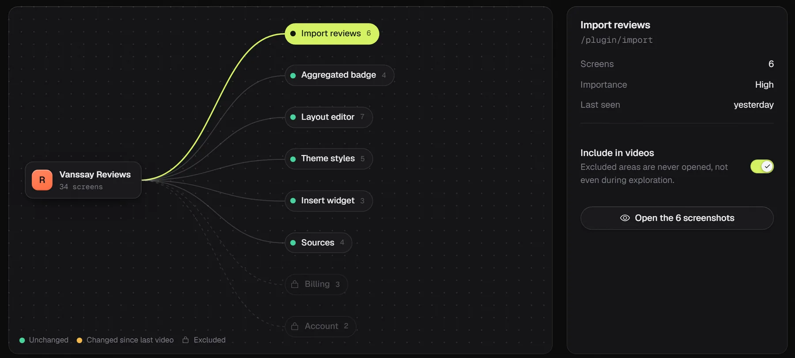
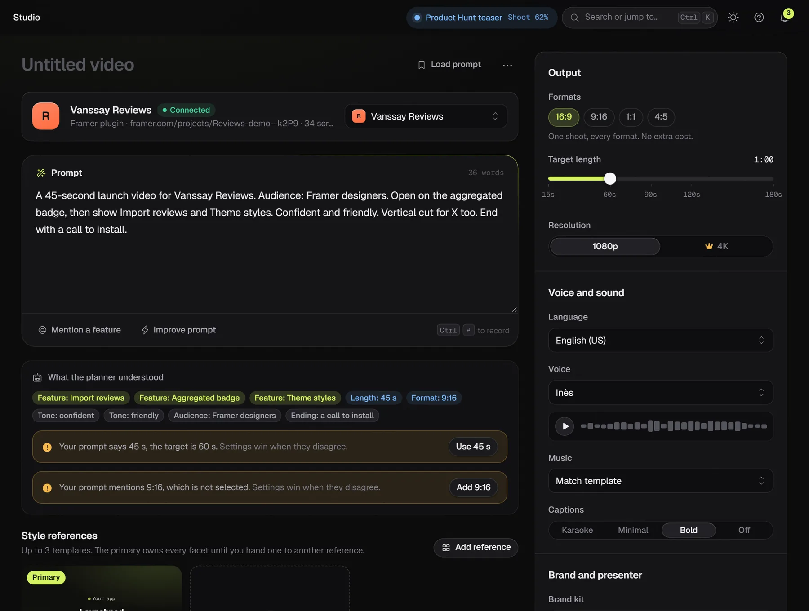
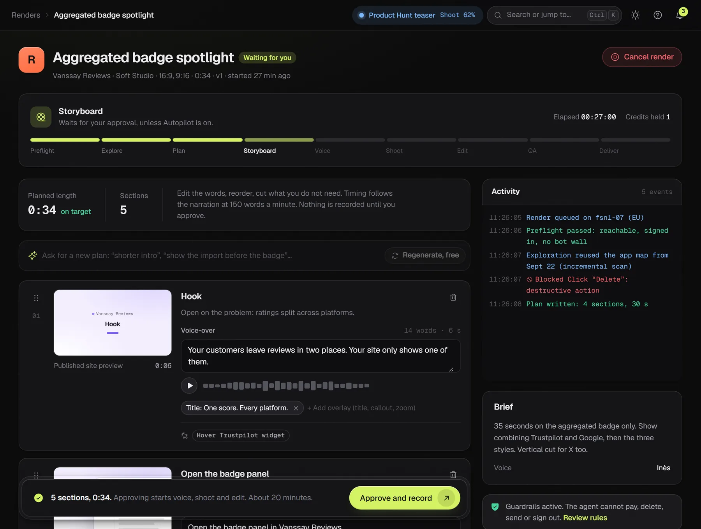
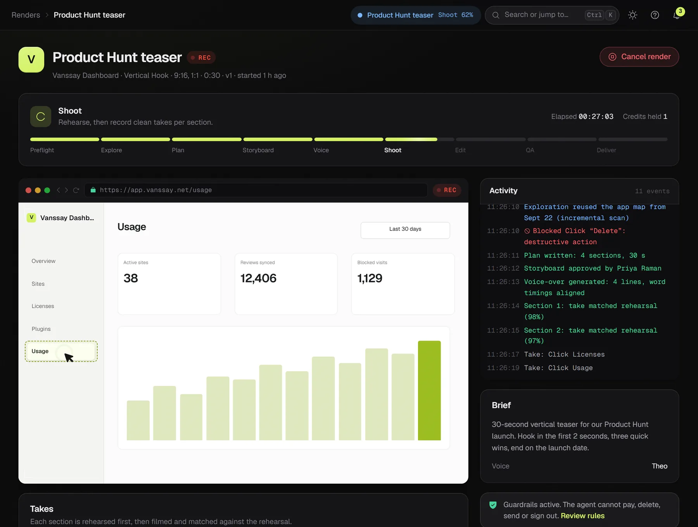
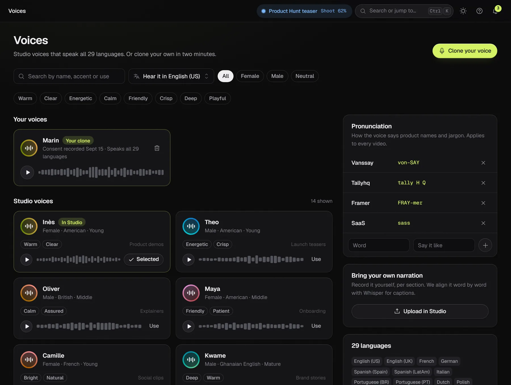
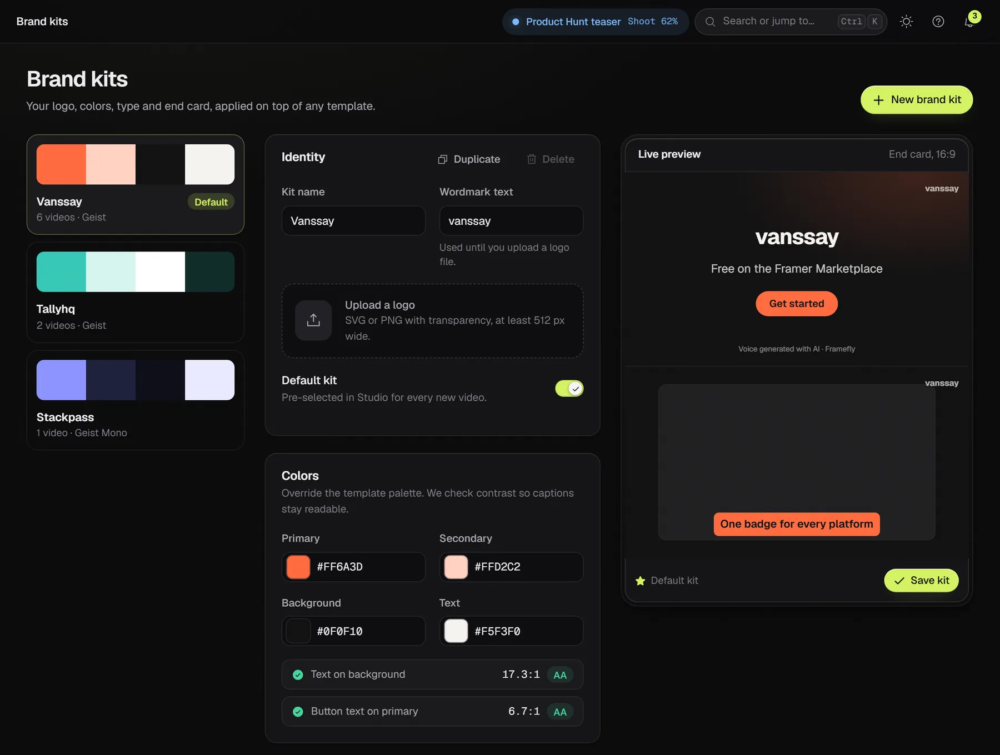
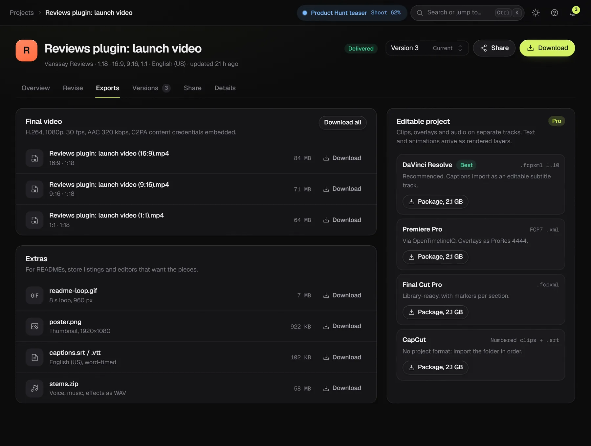
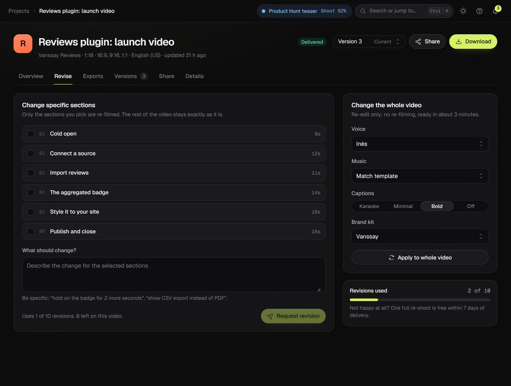
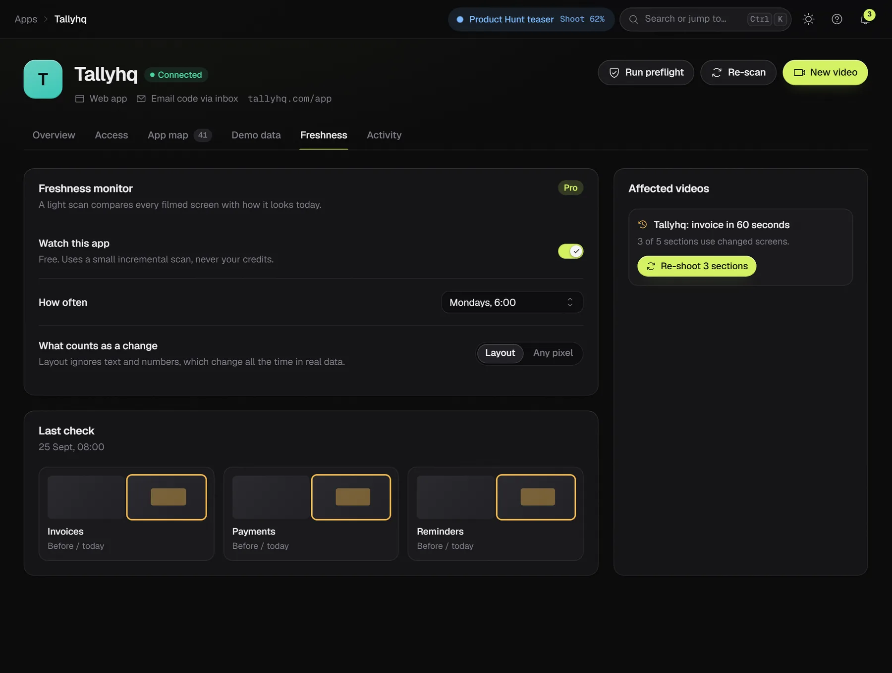

The product
From a login to a finished film.
Framefly works like a small production crew that lives in your browser. Here is every stage, shown with real screens from the app.

01Pre-production
Connect your app once.
Give Framefly a demo account and choose how it signs in. A free preflight checks that it can reach the app, sign in and find no bot wall before any credit is used.
Anything behind a login in a browser, including apps built with Lovable, Bolt, Replit or v0.
At launchUpload the .zip or give the store ID. The agent uses it on a host page you choose.
BetaFilmed inside the Framer editor from a demo project, straight from the marketplace or your dev server.
BetaSame idea: the runtime changes, the rest of the pipeline stays.
Later
Paste the authenticator secret, or drop a screenshot of the QR code. Framefly generates the codes.
Sign the demo account up with an address like tallyhq-7f3k@inbox.framefly.app. The agent reads the codes and magic links there.
Sign in once in Chrome and import the session with the Helper extension. You get a warning before it expires.
npx framefly tunnel 3000 opens a tunnel only the agent can use, for as long as the session lasts.

After the first exploration you get a precise checklist, like "Your dashboard shows 0 projects. Add 5 to 8 realistic ones."
Opt in and it creates believable records through your UI. It may create and edit. It never deletes.
A webhook puts the account back in a known state before each take, so every video starts the same way. Pro and Studio.
02Direction
Describe the video. Settings keep it exact.
Write what you want in plain words. The planner shows what it understood as you type, and when your prompt and your settings disagree, it says so and the setting wins.

Features from your app map, length, formats, tone and audience appear as chips while you write.
The first style owns every facet until you hand one to another: pacing from one, captions from another.
Switch it on and Framefly skips the storyboard review. It is off by default.
03The checkpoint
Nothing is filmed until you say so.
The storyboard arrives in about five minutes. Change the words and the timing follows, drag sections around, cut what you don't need. Then approve and record.

Every line shows its word count and length. Section timing always comes from the generated audio, never from a guess.
"Shorter intro." "Show the import before the badge." Regenerating a storyboard is free.
An unapproved storyboard waits 7 days. After that it expires and the held credit comes back.
04The shoot
Filmed frame by frame, not screen-recorded.
A screen recording stutters as soon as the machine gets busy. Framefly renders your page one frame at a time on a virtual clock, at twice the pixel density, so motion stays smooth and zooms stay sharp.

Unique frames per second, against a standard browser recording of the same 20-second scenario.
Longest freeze. One frame at 60 fps, against almost a full second of frozen picture.
Frame size at forced 2x density. Real-time capture silently drops back to 1x.
Before each take: network idle, the page calm for 400 ms, fonts loaded, images decoded, no spinner in sight.
Dates and random values are pinned, so a take can be filmed again and match.
A rehearsal records key frames, and each take is compared against it. Too different, and it shoots again, up to three times.
The pointer follows a smooth path computed from the recorded clicks, with a ripple on each one.

05Post-production
Voice, captions, music and your brand.
Narration is generated first, so every section is cut to real speech. Then come captions timed word by word, music written to the exact length, and your colors, logo and type.

Listen to any voice in any language before you pick it.
Clone your voice after reading a consent phrase aloud, or upload your own narration per section and Framefly aligns the captions to it.
A pronunciation list teaches the voice your product names: Vanssay as "von-SAY".
Generated for the mood of your style at the exact duration of the video, and ducked under the voice. Or upload your own track.
Karaoke, minimal or bold blocks, with your fonts and colors. Delivered as SRT and VTT too.
An AI presenter can open and close the video or sit in a corner. Always labeled as AI-generated. One extra credit.

06Delivery
Every format, every file.
One take becomes 16:9, 9:16, 1:1 and 4:5, plus a looping GIF, caption files and audio stems. Pro and Studio also get the project for your editor.

Change one section. Keep the rest.
Pick the sections to change and say what should be different. Only those are filmed again. Voice, music, caption and brand changes only need a new edit, ready in about three minutes.
- 10 revisions included with every video
- Versions side by side, v1 to v3 and beyond
- One free full re-shoot within 7 days if you're not happy
- A share page and an embed code for your site

07After launch
Your UI changes. Your video keeps up.
On Pro and Studio, Framefly takes a light look at every connected app each week. When a screen you filmed has changed, you get an alert and re-shoot only the sections that use it.

A GitHub Action can trigger a refresh when you ship, so the video on your landing page matches the product.
Start renders from your own tools and get told when a storyboard is ready or a video is delivered. Studio plan.
Ask your coding agent to make the demo video for the feature it just built.
Your app, filmed on October 28.
Beta testers get their videos before launch day, for free.